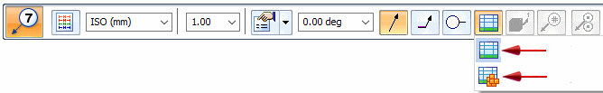
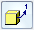
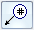
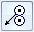
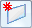

Balloon command bar
Determines the size, shape, and formatting of a balloon. The options that are available depend upon whether the balloon is placed on a model as PMI or placed on a drawing.
- Dimension Style Mapping
-
Specifies that the element-to-style mapping settings on the Dimension Style tab of the Solid Edge Options dialog box determine the dimension style to use for placing dimensions and annotations. When you set this option, Dimension Style is unavailable.
- Dimension Style
-
Lists and applies the available styles. This control is unavailable when Dimension Style Mapping is selected.
- Text scale
-
Applies a scale value to the current text height. The default is 1.0.
- Properties
-
Selecting the Properties button displays the Balloon Properties dialog box for you to define or apply balloon property settings. You can apply a saved setting by clicking the arrow and then selecting the name of the setting you want to apply.
- Angle
-
Specifies the orientation angle of the balloon.
- Leader
-
Displays a leader line connecting the balloon to the geometry.
- Break line
-
Places a break line on the leader.
- Shape
-
Specifies which balloon shape you want from the list of available shapes.
- Link to Parts List
-
Links balloons placed on a drawing view to a parts list. Select one of the following options:

-
Link to Parts List—On a drawing view of any assembly, links to a standard parts list.
-
Link to Family of Assemblies Parts List—On a drawing view of a family of assemblies member, places item balloons that reference the item numbers in a FOA parts list. For more information, see Family of Assemblies (FOA) parts lists.
Note:For assembly drawings—This option must be set if you want to display the assembly item number and item count in balloons placed on an assembly drawing. To balloon individual part views of the same assembly, you can place another assembly drawing view with the Link to Parts List option selected, and then use the Display page (Drawing View Properties dialog box) to hide the parts that you do not want to see.
-

Item number-
Specifies that you want the balloons to show the same item numbers that are used in the assembly model. When you clear this option, you can define the item numbers yourself using the text boxes.
For balloons on drawings, you must also set the Link to Parts List option.
Note:-
If you place a balloon with the Item number option selected, and item numbers have not been created in the assembly model, then N/A is displayed in lieu of an item number.
-
Item numbers are created in the assembly model when the Maintain item numbers check box is selected on the Item Numbers page (Solid Edge Options dialog box).
-

Item count-
Specifies that you want to show the quantity value for each item number in the bottom half of the balloon.
For balloons on drawings, you must also select the Link To Parts List option.
Note:For underline balloon shapes, which do not have a designated box to display the item count, you can use the Parts List Quantity Property Text button to insert the item count into the Prefix or Suffix of the underline balloon.

Show fastener system stack-
When a fastener system component is selected in a drawing view and the Link To Parts List option is selected, displays all of the balloons related to the fastener system in a horizontal or vertical stack. The stack arrangement and text alignment properties are specified on the General page (Balloon Properties dialog box).
When deselected, fastener component balloons are displayed and manipulated as individual balloons.
- Height
-
Specifies the balloon height as a ratio of text height. The actual height of the balloon is the value you enter multiplied by the text height defined in the dimension style.
- Upper
-
Specifies text for the top half of the balloon.
This option is not available when the balloon is using item numbers extracted from the model.
- Lower
-
Specifies the text you want in the bottom half of the balloon. When you type text in the Lower box, a horizontal dividing line is added to the balloon automatically.
- Prefix
-
Specifies prefix information to display before the balloon.
- Suffix
-
Specifies suffix information to display after the balloon.
 Parts List Quantity Property Text
Parts List Quantity Property Text-
Inserts %{Parts List Quantity|G} to extract the parts list quantity into the balloon text. This is inserted at the current cursor location in the Upper, Lower, Prefix, or Suffix box.
For underline balloon shapes, which do not have a designated box to display the item count, you can use the Parts List Quantity Property Text button to insert the item count in the Prefix or Suffix of the underline balloon.
 Property Text
Property Text-
Opens the Select Property Text dialog box.
To learn how to assign property text to a balloon label, see the Help topic, Show document properties in balloons.
 Reference Text
Reference Text-
Selects text strings from annotations and drawing views for the purpose of inserting the information into other annotations, such as callouts, feature control frames, and balloons.
For more information, see Create reference text.

Lock Dimension Plane-
Sets the active dimension plane for the creation of PMI dimensions and annotations. The active dimension plane controls how values are calculated and how the text is displayed.
You are prompted to specify the dimension plane by clicking a planar face or reference plane. The plane remains locked until you unlock it by pressing F3.
 Referenced Geometry
Referenced Geometry-
Specifies that you want to select multiple edges, faces, or surfaces to be referenced by a single PMI annotation. You also can select this option when editing the annotation, to add or remove reference elements. Use the Select Reference Geometry command bar to accept the selection set, and then return to the hosting command workflow to finish adding or editing the annotation.

For more information, see Select multiple reference elements.